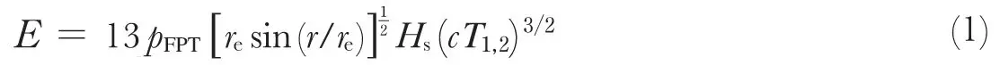
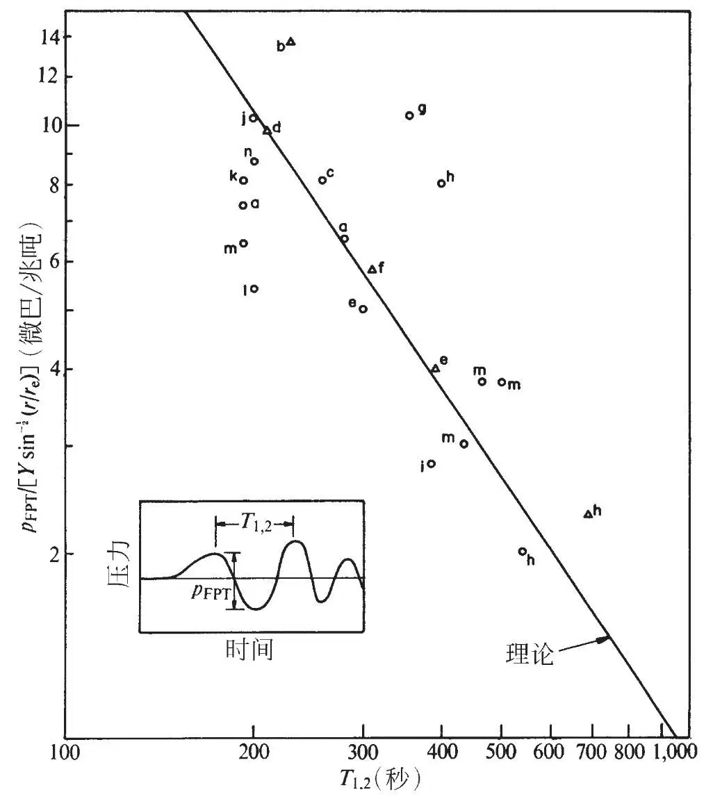

英文
英文波西，皮尔斯
编者按
20世纪70年代，物理学家们曾试图找到一种能精确估计核爆炸输出能量的方法，特别是因为可以在美国和苏联即将实施的核爆炸试验中进行估算。乔·波西和艾伦·皮尔斯在本文中阐述了他们为估计核爆炸能量而推导出来的一个新公式的精确性，这个公式是根据对最初爆炸产生的极弱空气波的测量得到的。他们在公式中将核爆炸输出能量与次声波上的波峰–波谷间压力变化幅度及其周期的3/2次方联系起来。他们利用在1961年和1962年核武器试验之后所采集到的大量数据来说明上述公式与所有数据都符合得很好，尤其是对于输出能量小于11兆吨左右的核爆炸。 英文
继美国和苏联在1954年至1962年间对大气所作的一系列测试之后，有不少人发表了由核弹试验产生的空气波的微压计记录数据[1-8]。如果要用以前的理论[7,9]来解释这些波形，就需要较为确切地知道连接爆炸源和微压计之间路径上方的平均气温和风廓线。这样的风廓线是不可能精确得到的，并且在每一个点上的值都是有所不同的，而且因为风廓线中看似微小的变化就能使波形发生相当大的改变，所以即使只是想要根据这些微压计记录值估计出核爆炸产生能量输出的数量级恐怕也并非易事。然而，我们最近将在别处发表的一篇文章中对此项工作进行进一步的报道——我们成功地推导出了特定波形特征和能量输出之间存在的近似理论关系，这种方法对大气结构变化不是很敏感。其关系式如下：

式中：E代表释放出的能量，pFPT是从第一个波峰到波谷的压力变化幅度（见图1），re表示地球半径，r表示从爆炸点到观测点的大圆距离，Hs表示低层大气标高，c表示声速，而T1,2是第一个波峰与第二个波峰之间的时间间隔。本篇论文的目的在于阐述上述关系式与实际测量数据之间的符合程度。 英文

图1．核爆炸所产生的次声波的振幅和周期数据与理论关系式的对比。其中标有字母a到n的数据点分别对应于文章中所定义的特殊事件。○表示唐和肖的记录数据；△表示哈克赖德的记录数据。 英文
图1中所示的各个点分别对应于：在苏联核爆炸之后于加州帕萨迪纳、加州伯克利、亚速尔群岛特塞拉岛、弗莱彻浮冰岛、新泽西州惠帕尼、夏威夷州埃瓦海滩和纽约州帕利塞兹测量的微压计记录结果，测量时间分别为1961年（a）9月10日（10兆吨），（b）9月11日（9兆吨），（c）9月14日（7兆吨），（d）10月4日（8兆吨），（e）10月6日（11兆吨），（f）10月20日（5兆吨），（g）10月23日（25兆吨），（h）10月30日（58兆吨）和（i）10月31日（8兆吨）；在美国核爆炸之后于上述地点测量的微压计记录结果，时间为1962年（j）5月4日（3兆吨），（k）6月10日（9兆吨），（l）6月12日（6兆吨），（m）6月27日（24兆吨）和（n）7月11日（12兆吨）。本文中对核爆炸能量输出值的估计（相当于多少兆吨三硝基甲苯爆炸所释放的能量，其中1兆吨=4.2×1022尔格）利用了贝斯的结果[10]。所有测量记录均来自哈克赖德[7]以及唐和肖[8]的文章。哈克赖德记录值中的压力变化幅度是由他的微压计响应数据计算得到的。唐和肖记录值中的压力变化幅度是根据以下假设得到的（唐，私人交流）：（a）所有用拉蒙特A型微压计所作的记录都采用了同样的标度（b）标度以外振动的削波幅度为350微巴。图1中纵坐标 的单位为微巴/兆吨，其中爆炸能量输出Y的单位是兆吨。横坐标周期T1,2的单位为秒。请注意图1中的横纵坐标均采用对数形式。实线代表由式（1）给出的理论关系，其中c和Hs的取值分别为310米/秒和8千米。 英文
的单位为微巴/兆吨，其中爆炸能量输出Y的单位是兆吨。横坐标周期T1,2的单位为秒。请注意图1中的横纵坐标均采用对数形式。实线代表由式（1）给出的理论关系，其中c和Hs的取值分别为310米/秒和8千米。 英文
理论曲线的发散可能是由多种原因造成的，其中有一个可能性非常大，即由地平大气折射以及随之而来的因大气层偏离理想层而产生的聚焦或散焦所导致的振幅波动。我们也注意到：如果忽略大于11兆吨的爆炸所对应的数据，那么大部分发散将不复存在。由上述数据似乎足以证明这样的趋势：对于由同样事件产生的信号，周期较长信号的幅度要低于在别处记录的信号的幅度。 英文
（韩少卿 翻译；尚仁成 审稿）